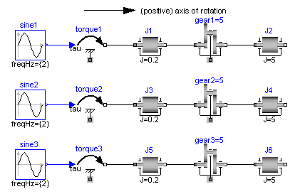

Modelica.Mechanics.Rotational.UsersGuide.SignConventions
Modelica.Mechanics.Rotational.UsersGuide.SignConventions
Modelica.Mechanics.Rotational.UsersGuide.SignConventionsThe variables of a component of this library can be accessed in the usual way. However, since most of these variables are basically elements of vectors, i.e., have a direction, the question arises how the signs of variables shall be interpreted. The basic idea is explained at hand of the following figure:

In the figure, three identical drive trains are shown. The only difference is that the gear of the middle drive train and the gear as well as the right inertia of the lower drive train are horizontally flipped with regards to the upper drive train. The signs of variables are now interpreted in the following way: Due to the 1-dimensional nature of the model, all components are basically connected together along one line (more complicated cases are discussed below). First, one has to define a positive direction of this line, called axis of rotation. In the top part of the figure this is characterized by an arrow defined as axis of rotation. The simple rule is now: If a variable of a component is positive and can be interpreted as the element of a vector (e.g. torque or angular velocity vector), the corresponding vector is directed into the positive direction of the axis of rotation. In the following figure, the right-most inertias of the figure above are displayed with the positive vector direction displayed according to this rule:

The cut-torques J2.flange_a.tau, J4.flange_a.tau, J6.flange_b.tau of the right inertias are all identical and are directed into the direction of rotation if the values are positive. Similiarily, the angular velocities J2.w, J4.w, J6.w of the right inertias are all identical and are also directed into the direction of rotation if the values are positive. Some special cases are shown in the next figure:

In the upper part of the figure, two variants of the connection of an external torque and an inertia are shown. In both cases, a positive signal input into the torque component accelerates the inertias inertia1, inertia2 into the positive axis of rotation, i.e., the angular accelerations inertia1.a, inertia2.a are positive and are directed along the "axis of rotation" arrow. In the lower part of the figure the connection of inertias with a planetary gear is shown. Note, that the three flanges of the planetary gearbox are located along the axis of rotation and that the axis direction determines the positive rotation along these flanges. As a result, the positive rotation for inertia4, inertia6 is as indicated with the additional grey arrows.